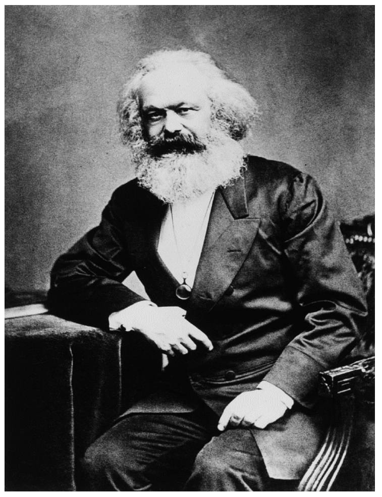

社会主义是18世纪和19世纪初叶的古典自由主义的对立面。自由主义强调个人和个人权利，社会主义则强调社会和社会的集体福利。自由主义声称社会是自然法则的产物，否认通过立法人为地增进人类幸福的可能性，而社会主义则认为人类通过理性的思考和行动能决定自己的社会制度和社会关系。此外，社会主义坚持认为，人的本性主要是社会环境的产物，因此，如果特别地建立一个社会，其目的在于促进集体福利而不是促进个人利益、促进合作的社会态度和行为形式而不是促进竞争的社会态度和行为形式，那么，当代的弊病就可以被消除。简言之，社会主义强调的是集体的社会和有计划的社会变革，而不是个人和自由放任主义。
改革社会的种种计划绝不是我们当今时代所特有的。从文明兴起以来，政治权力和经济权力一直集中在少数人手中。由于这种情况，各时代的预言者和改革者都提倡促进社会正义和社会平等的种种计划。例如，在古典世界，柏拉图在《理想国》中要求实现一种贵族式的共产主义、一种共产主义哲学家的专政。在中世纪时期，英国农民领袖约翰·保尔告诉其追随者：“我的善良的人们，直到所有的商品为人们所共同拥有时，直到既没有农奴也没有绅士、我们人人平等时，英国的事情才能办好，才能在任何时候都会办好。”[7]英国革命和法国革命的骚动和激情自然激励人们提出更多促进公共福利的方案，但正如我们看到的那样，最终的结果却是相对保守的克伦威尔和拿破仑的胜出。
19世纪早期，出现了一派新的朝气蓬勃的社会改革者——空想社会主义者。杰出的人物是法国人圣西门（1760—1825年）和傅立叶（1772—1837年）与英国企业家罗伯特·欧文（1771—1858年）。尽管他们的建议极不相同，但都有一个共同的基本特点。他们把注意力集中在他们所设计的模范社会的原则和明确的活动方式上，但是，对于这些模范社会将如何取代现存社会的问题，他们从未认真地考虑过。例如，圣西门曾试图谋求教皇和路易十八的支持。傅立叶曾于每天中午坐在自己的房间里，等候人们对他在报上请求支持的呼吁作出响应，白白等候了12年。这些改革者肯定没有从革命或阶级斗争的观点来进行思考。实际上，他们几乎没有考虑过自己精心制作的蓝图如何才能付诸实践。正是出于这一原因，他们才被称为空想社会主义者。
现代社会主义之父马克思（1818—1883年）几乎在每个方面都根本不同于空想社会主义者。马克思是唯物主义者，而空想社会主义者是唯心主义者。马克思用自己一生的大部分时间研究现存的资本主义社会的历史发展和确切作用，而空想社会主义者则制定模范社会的种种蓝图。马克思根据自己的历史研究，坚信资本主义将因阶级斗争而被推翻，并被一种新型的社会主义社会代替。他之所以会得出这一结论是因为他相信，付给工人的工资不够他们去购买他们所生产的东西。这种不充足的购买力最终必然导致工厂倒闭、失业、购买力进一步下降和最后的全面萧条。此外，马克思认为，这种萧条将变得日益频繁、日益严重，直到最后失业的无产阶级在绝望中被迫起来革命为止。这样，资本主义就将由社会主义取代，正如早先的封建主义已由资本主义取代一样。新的社会主义社会将是抗萧条的，因为随着实行生产资料公有制，不再存在私人雇主、利润，从而也就不再存在购买力的不足。
马克思并未将自己限制在理论和写作之上。在他的一生中，为组织和鼓动工人们，他将知识活动同各种尝试结合起来。他的《共产党宣言》（1848年）的最后一句话就是：“全世界无产者联合起来！”他在1864年建立国际工人协会即通常所称的第一国际方面起了重要作用。这一团体接受了马克思关于无产者为了以社会主义方式改革社会而夺取政权的纲领。它以自己的宣传工作和参加各种罢工的行动引起了很大的关注。但是，它于1873年分裂，主要是因为其成员除了有社会主义者以外，还包括缺乏纪律性、经常不和的各种浪漫主义者、民族主义者和无政府主义者。
1889年，社会党国际即第二国际在巴黎成立。这是一个松散的组织，当时，已出现于各国的许多社会党都加入了该组织。第二国际迅速发展，到1914年，它由27个国家的社会党组成，总共拥有1200万工人成员。就其学说和行动而言，第二国际比第一国际温和得多。侧重点有了这一改变的原因在于，组成第二国际的主要政党本身正在背弃真正的马克思主义，转向所谓的修正主义。有许多原因可以解释侧重点的这一改变。一个因素是，在西欧各国，选举权逐渐扩大，这就意味着工人能利用选票而不是利用子弹来实现自己的目标。另一个因素是，1850年以后，欧洲的生活水平稳步上升，这往往使得工人们更乐于接受资本主义。德国修正主义领袖伯恩斯坦表达了这种新观点，他宣称，社会主义者应该“为更好的未来少工作一些，为更好的现在多工作一些”。换句话说，这一新策略就是通过渐进主义的改革手段来获得直接利益，而不是通过革命来为一个社会主义社会而奋斗。并非所有的社会主义者都愿意跟着这种修正主义走。

图200 卡尔·马克思的社会主义哲学最终战胜了欧洲其他流派的社会主义学说，但他那里程碑式的著作直到今天仍然引来了各种各样的解释、评论和修订。
他们当中有些人仍忠实于他们认为是马克思学说的东西，所以，大部分社会党都分裂成了“正统”派和“修正主义”派。不过，修正主义者更适合时代的趋势，通常控制着他们各自的政党。的确，他们能组织起强大的工会运动，能在选举中赢得数百万张选票。事实上，到1914年，德国、法国和意大利的社会党已在各自的国民议会中比其他任何政党都拥有更多的席位。
当1914年第一次世界大战开始时，第二国际为它的修正主义付出了代价：其大多数成员被证明他们首先是民族主义者，其次才是社会主义者。他们响应了各自国家政府的主张，结果是数百万工人战死在壕沟两侧。因而，第二国际被扯碎，虽然战后它又复兴，但再也没能获得其从前的力量和声望。
然而，社会主义并没有随着第二国际的四分五裂而渐趋消失。实际上，俄国社会主义者即通常所说的布尔什维克，正是在第一次世界大战期间成功地夺取了政权，建立起有史以来第一个无产阶级政府。此外，布尔什维克组织了第三国际即共产国际，向第二国际即社会党国际挑战。由于欠发达国家的农民和工人没有享受到发达国家的工人所享受的繁荣和自由，所以马克思主义只在前殖民地赢得了很多追随者。在两次世界大战的兵燹之后尤其如此。近年来，马克思主义已失去了许多吸引力，因为正如我们在下面将看到的，在世界各地出现的马克思主义社会与马克思在19世纪提出的光辉理想被证明是大相径庭的。